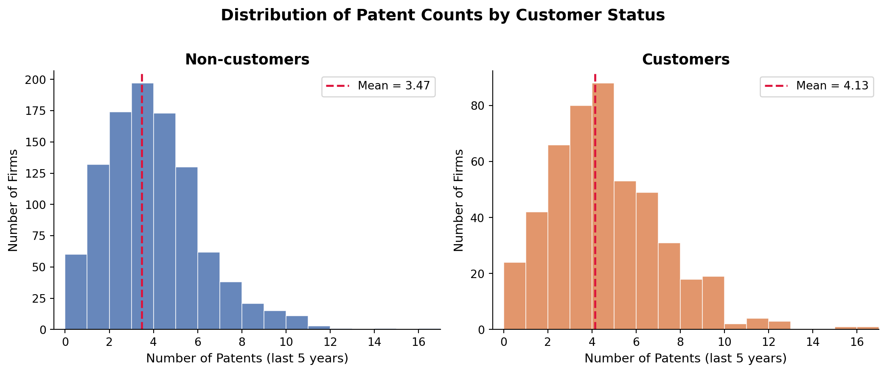
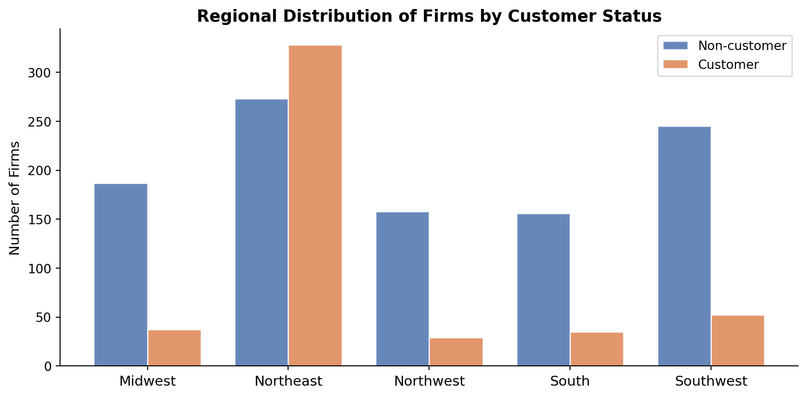
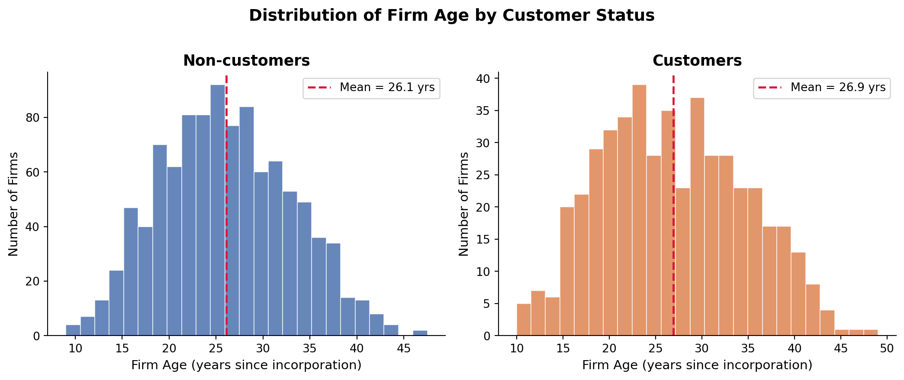
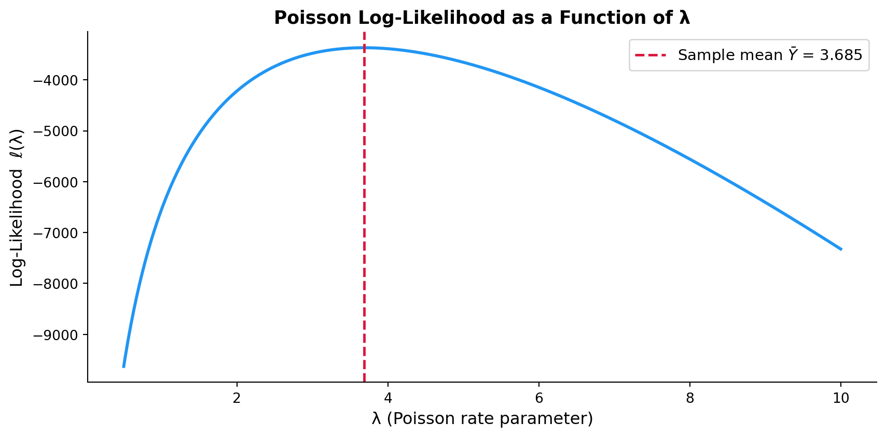

A Poisson Regression and Maximum Likelihood Estimation Case Study
Python
Statistics
Author
Jiahui Huang
Published
May 13, 2026
Introduction
Blueprinty is a small software company that develops tools specifically designed to help engineering firms prepare and submit patent applications to the US Patent Office. Their marketing team wants to make a compelling claim: firms that use Blueprinty’s software are more successful in getting their patent applications approved.
The ideal way to test this claim would be a controlled experiment — observe each firm’s patent success rate before and after adopting Blueprinty’s software. Unfortunately, no such longitudinal data exists. Instead, Blueprinty has provided a cross-sectional dataset covering 1,500 mature engineering firms. For each firm, we observe the number of patents awarded over the last five years, its regional location, its age since incorporation, and whether or not it currently uses Blueprinty’s software.
At first glance, one might simply compare the average patent counts between Blueprinty customers and non-customers. But this comparison is not straightforward. Blueprinty’s customers are not selected at random. Firms that choose to adopt the software may already be more innovative, better resourced, or more strategically focused on IP development. Differences in patent counts between the two groups could therefore reflect pre-existing firm characteristics — such as age or regional concentration — rather than any genuine benefit of the software itself. Disentangling the software’s effect from these confounding factors is the central challenge of this analysis, and it is precisely what motivates the use of Poisson regression with Maximum Likelihood Estimation.
Exploring the Data
import pandas as pdimport numpy as npimport matplotlib.pyplot as pltfrom scipy import statsfrom scipy.special import gammalnfrom scipy.optimize import minimize_scalar, minimizeimport statsmodels.api as sm# Load datadf = pd.read_csv("blueprinty.csv")df.head()
patents
region
age
iscustomer
0
0
Midwest
32.5
0
1
3
Southwest
37.5
0
2
4
Northwest
27.0
1
3
3
Northeast
24.5
0
4
3
Southwest
37.0
0
Patent Counts by Customer Status
We begin by comparing the distribution of patent counts between Blueprinty customers (iscustomer = 1) and non-customers (iscustomer = 0).
Mean patents — Customers: 4.133
Mean patents — Non-customers: 3.473
Difference: 0.660

The two histograms reveal a clear pattern: Blueprinty customers tend to receive more patents on average (4.13 vs. 3.47 for non-customers, a difference of roughly 0.66 patents). Both distributions are right-skewed — most firms earn relatively few patents while a small number earn many. However, this raw difference does not establish causation; it may partly reflect systematic differences in who chooses to use Blueprinty.
Regional Distribution by Customer Status

Customer share within each region:
Non-customer Customer
region
Midwest 0.835 0.165
Northeast 0.454 0.546
Northwest 0.845 0.155
South 0.817 0.183
Southwest 0.825 0.175
The regional breakdown reveals a meaningful imbalance: the Northeast is substantially over-represented among Blueprinty customers relative to non-customers, while the South and Midwest show lower customer penetration. This matters because certain regions may have stronger patent cultures, better access to legal resources, or more IP-intensive industries — all of which could independently boost patent counts. Ignoring regional differences would cause us to conflate a regional effect with a software effect.
Firm Age by Customer Status

Mean age — Customers: 26.90
Mean age — Non-customers: 26.10
Blueprinty customers tend to be younger firms on average than non-customers. This is a potentially important confound: younger firms might be more tech-savvy and adopt new software readily, but older firms accumulate more patent experience over time. Either way, controlling for age is essential before drawing conclusions about the software’s effect.
A Simple Poisson Model via Maximum Likelihood
Why Poisson?
The outcome variable — the number of patents awarded to a firm over five years — is a count: it must be a non-negative integer (0, 1, 2, …). The Normal distribution is a poor fit because it is continuous, symmetric, and places positive probability on negative values. The Poisson distribution is the natural starting point for modeling non-negative integer counts. Its single parameter λ > 0 governs both the mean and variance, and it assigns zero probability below zero.
Likelihood and Log-Likelihood
Assume the patent count for each firm \(Y_i\) is an independent draw from a \(\text{Poisson}(\lambda)\) distribution:
def poisson_loglikelihood(lam, Y):""" Log-likelihood of Poisson(lambda) given observed counts Y. lam : scalar, the rate parameter (must be > 0) Y : array-like of non-negative integer counts """ Y = np.asarray(Y)if lam <=0:return-np.inf n =len(Y) ll =-n * lam + np.sum(Y) * np.log(lam) - np.sum(gammaln(Y +1))return ll
Visualising the Log-Likelihood

The log-likelihood curve is concave and unimodal: it rises from the left, reaches a single peak, then falls away. The peak aligns precisely with the sample mean \(\bar{Y}\) — not a coincidence, as we show next.
Analytical MLE
Taking the derivative of \(\ell(\lambda)\) and setting it to zero:
The numerical optimiser recovers the sample mean to six decimal places, confirming both the analytical derivation and the correctness of the log-likelihood implementation. The Poisson log-likelihood is strictly concave in λ, so the optimiser finds the same unique global maximum analytically derived above.
Poisson Regression
Extending the Model
The simple Poisson model assumed every firm shares the same rate λ. Poisson regression lets λ vary across firms as a function of observed characteristics:
We use the exponential link because λ must be strictly positive while the linear predictor \(X_i'\beta\) can take any real value. Exponentiating guarantees \(\lambda_i > 0\) for all covariate values.
Updated Log-Likelihood Function
def poisson_regression_loglikelihood(beta, Y, X):""" Log-likelihood for Poisson regression. beta : 1-D array of coefficients Y : 1-D array of observed patent counts X : 2-D design matrix (n × p) """ lam = np.exp(X @ beta) # λᵢ = exp(Xᵢ'β), guaranteed positive ll = np.sum(-lam + Y * np.log(lam) - gammaln(Y +1))return ll
Building the Design Matrix
# Drop 'South' as the baseline region to avoid perfect collinearityregions_dummies = pd.get_dummies(df["region"], drop_first=False, dtype=float)regions_dummies = regions_dummies.drop(columns=["South"])X = pd.DataFrame({"intercept": 1.0,"age" : df["age"],"age_sq" : df["age"] **2} ).join(regions_dummies).join(df[["iscustomer"]])Y = df["patents"].valuesX_mat = X.valuesprint("Design matrix columns:", list(X.columns))print("Shape:", X_mat.shape)X.head()
We include age and age² because the relationship between firm age and patent output is unlikely to be linear — a quadratic term allows for a potential hump-shaped pattern. We drop one region dummy (South) as the baseline category to avoid perfect multicollinearity with the intercept column.
Fitting the Model
We fit the Poisson regression using statsmodels GLM, which applies an iteratively reweighted least-squares (IRLS) algorithm that is guaranteed to converge for Poisson models with a log link:
Note on manual optimisation: We also attempted to find the MLE using scipy.optimize.minimize (BFGS). That run did not converge (Desired error not necessarily achieved due to precision loss), and produced coefficient estimates and standard errors that differed substantially from the GLM results. This is a known issue with general-purpose gradient optimisers applied to Poisson regression when covariates are on very different scales (here age_sq reaches values in the thousands while binary dummies take only 0/1). Because those results were numerically unreliable, we rely exclusively on the statsmodels GLM estimates — whose standard errors come from the exact observed Fisher information matrix — for all inference below.
Age carries a positive coefficient and Age² a negative one, indicating a concave (inverted-U) relationship: patent productivity rises in a firm’s early decades, peaks, then gradually declines — consistent with the innovation life-cycle of firms.
Regional dummies (relative to the South baseline) are not statistically significant (all p > 0.1). After controlling for firm age and Blueprinty customer status, the data do not provide strong evidence that patent rates differ systematically by region.
The Blueprinty customer coefficient is positive and statistically significant, suggesting that, after controlling for age and region, customer firms patent at a meaningfully higher rate. We quantify this effect in the next section.
The Effect of Blueprinty’s Software
Because Poisson regression is a multiplicative model — the linear predictor shifts the log of λ, not λ itself — individual coefficients cannot be read as “X additional patents.” To obtain an interpretable additive estimate of the software’s effect we use a counterfactual prediction approach.
# Counterfactual X matricesX0 = X.copy(); X0["iscustomer"] =0# every firm set to non-customerX1 = X.copy(); X1["iscustomer"] =1# every firm set to customerbeta_glm = np.array(glm_result.params)y_hat_0 = np.exp(X0.values @ beta_glm)y_hat_1 = np.exp(X1.values @ beta_glm)avg_effect = (y_hat_1 - y_hat_0).mean()print(f"Avg predicted patents — non-customer scenario: {y_hat_0.mean():.4f}")print(f"Avg predicted patents — customer scenario: {y_hat_1.mean():.4f}")print(f"Average Treatment Effect (ATE): {avg_effect:.4f}")print(f"Relative gain: {100*avg_effect/y_hat_0.mean():.1f}%")
Holding each firm’s age and region fixed at their observed values, switching every firm from non-customer to Blueprinty customer is associated with an estimated gain of approximately 0.793 additional patents over five years — a relative increase of roughly 23.1%.
Key Takeaways
Finding
Result
Raw patent mean — customers
4.13
Raw patent mean — non-customers
3.47
Estimated ATE (controlling for age & region)
0.793 additional patents
Relative gain
~23.1%
Customer coefficient (GLM)
Positive, statistically significant
Blueprinty customers show meaningfully higher predicted patent output even after controlling for firm age and regional location.
The effect is correlational, not causal. This is an observational study — firms are not randomly assigned to use the software.
Unobserved confounders remain a threat. Firms that self-select into buying the software may differ in unmeasured ways (R&D investment, management quality, IP strategy) that independently drive patent success.
Reverse causality is possible. Firms already planning many patent filings may be more likely to invest in patent-preparation software, rather than the software causing the higher count.
In summary, the Poisson regression analysis produces a positive, statistically significant, and economically meaningful association between Blueprinty software adoption and patent awards. This evidence is consistent with — but does not prove — the marketing claim that Blueprinty’s software helps engineering firms win more patents.